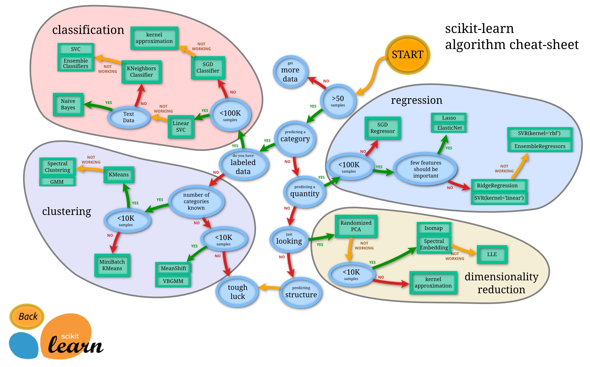

数值分析
灵敏度分析和误差分析
灵敏度分析
敏感度分析（Sensitivity analysis）是研究数学模型或系统(数值或其他)输出中的不确定性如何在其输入中被分配到不同的不确定性来源。[1][2]一个相关的实践是不确定度分析，它更注重不确定度的量化和不确定度的传播;理想情况下，不确定度和灵敏度分析应该同时进行。
在其他假设下重新计算结果以确定变量在敏感性分析下的影响的过程可用于一系列目的，[3]包括：
- 在存在不确定性的情况下测试模型或系统结果的稳健性。
- 增加对系统或模型中输入和输出变量之间关系的理解。
- 通过识别导致输出中存在显着不确定性的模型输入来减少不确定性，因此应该成为关注的焦点，以便提高稳健性（可能通过进一步的研究）。
- 搜索模型中的错误（通过遇到输入和输出之间的意外关系）。
- 模型简化 - 修复对输出没有影响的模型输入，或识别和删除模型结构的冗余部分。
- 加强建模人员与决策者之间的沟通（例如，通过提出更可信，可理解，引人注目或具有说服力的建议）。
- 在输入因子空间中查找模型输出为最大值或最小值或满足某个最佳标准的区域。
- 在校准具有大量参数的模型的情况下，主要灵敏度测试可以通过关注敏感参数来简化校准阶段。不知道参数的敏感性会导致无用的时间花在非敏感的时间上。[4]
- 寻求识别观测，模型输入和预测或预测之间的重要联系，从而开发出更好的模型。[5][6]
（from wiki）
sklearn 模块参考书
sklearn 全称 scikit learn 是机器学习领域当中最知名的python模块之一
sklearn 包含了很多种机器学习的方式：
- Classification 分类
- Regression 回归
- Clustering 非监督分类
- Dimensionality reduction 数据降维
- Model Selection 模型选择
- Preprocessing 数据预处理
选择模型
sklearn 中包含了众多的学习模型，我们需要根据实际问题选择适合的模型
这里有一张官网流程图帮助大家，根据实际问题，选择合适的模型

这里，本人还未完全熟悉所有学习方式，拷贝了sam‘s note 的相关链接
- 2017/06/11 【1】简介--1--机器学习
- 2017/06/11 【1】简介--2--sklearn简介
- 2018/08/14 【2】监督学习
- 2017/06/14 【2】监督学习--1--分类
- 2018/08/28 【2】监督学习--1--分类-K近邻分类器
- 2018/08/28 【2】监督学习--1--分类-决策树(DecisionTreeClassifier)
- 2018/08/28 【2】监督学习--1--分类-贝叶斯(naive_bayes)
- 2018/08/28 【2】监督学习--1--分类-支持向量机(svm)
- 2017/06/15 【2】监督学习--2--回归
- 2018/08/22 【2】监督学习--3--多项式变形--PolynomialFeatures
- 2017/06/11 【3】无监督学习概述
- 2017/07/08 【3】无监督学习--3--聚类--概述
- 2018/07/05 【3】无监督学习--3--聚类--基于距离--kmeans
- 2017/07/08 【3】无监督学习--3--聚类--层次聚类
- 2018/05/16 【4.1.1】模型选择与评估--1--交叉检验（Cross Validation）
- 2018/08/17 【4.3.1】量化预测结果
- 2018/09/21 【4.3.2.3】量化预测结果--分类变量--准确率，召回和F-措施
- 2018/09/21 【4.3.2.1】量化预测结果--分类变量
- 2018/07/05 【4.3.2.9】量化预测结果--分类变量--MCC、RI
- 2017/02/07 【4.3.2.2】量化预测结果--分类变量--ROC曲线和AUC评价指标
- 2018/08/17 【4.4.1】模型的保存与调用
- 2018/08/17 【4.5.1】验证曲线--欠拟合和过拟合
- 2018/08/17 【4.5.2】验证曲线--绘制验证曲线
- 2018/08/17 【4.5.3】验证曲线--绘制学习曲线
- 2018/05/13 【5】数据集转化--3--预处理数据-One Hot Encoding in Scikit-Learn
- 2017/07/07 【9】例子--1--general--Plotting Cross-Validated Predictions（交叉验证预测）
- 2017/07/08 【9】例子--1--general--混合多重方法获得feature
- 2017/07/08 【9】例子--1--general--PCA与逻辑回归的搭配
- 2017/07/07 【9】例子--1--general--保序回归(Isotonic Regression)
- 2017/07/07 【10】报错-1-Mac运行sklearn的matplotlib问题
wifi 相关
使用大功率无线网卡抓取cap包用于密码破解（macos）
1、安装aircrack-ng
命令：brew install aircrack-ng
注意，如果没安装brew,访问：https://brew.sh，首页上有安装brew的命令，我安装时（201706）命令如下：
/usr/bin/ruby -e "$(curl -fsSLhttps://raw.githubusercontent.com/Homebrew/install/master/install)"
2、添加airport快链
命令：ln -s /System/Library/PrivateFrameworks/Apple80211.framework/Versions/Current/Resources/airport /usr/local/bin/airport
3、使用mac自带的airport选取mac地址
命令：airport -s
选择CHANNEL的数值，比如：11
4、监听选定的频道获取到握手的包
命令：airport en0 sniff 11
运行一段时间，就可以在/tmp收获以.cap结尾的分析包，结束之后会提示保存的.cap文件位置
注意：（1）尽可能不要运行太长时间，否则.cap文件会比较大；
（2）可以使用ctr+c结束运行(我刚开始就不知道🙈)；
（3）如果提示权限问题，则使用 sudo airport en0 sniff 11
5、用 aircrack-ng分析cap包
命令：sudo aircrack-ng /tmp/airportSniff******.cap
找到有(1 handshake)的那一行记录，记录下BSSID（比如是:10:02:22:23:7v:6f）。
建议直接搜索，否则能看晕，如果没有搜索到，请重新执行第4步；
6、开始暴力破解
命令：sudo aircrack-ng-wpojie.txt-b10:02:22:23:7v:6f/tmp/airportSniff******.cap
注意：.txt为破解字典
如果有碰撞到密码，程序会停止，并显示密码。
scipy 模块参考书
- Introduction
- Basic functions
- Special functions(scipy.special)
- Integration(scipy.integrate)
- Optimization(scipy.optimize)
- Interpolation(scipy.interpolate)
- Fourier Transforms(scipy.fftpack)
- Signal Processing(scipy.signal)
- Linear Algebra(scipy.linagle)
- Sparse Eigenvalue Problems with ARPACK
- Compressed Sparse Graph Routines(scipy.sparse.csgraph)
- Spatial data structures and algorithms(scipy.spatial)
- Statistics(scipy.stats)
- Multidimensional image processing(scipy.ndimage)
- File IO(scipy.io)
import numpy as np
import matplotlib as mpl
import matplotlib.pyplot as plt
scipy 主要有15个子模块
from scipy import cluster, constants, fftpack, integrate, interpolate, io, linalg, ndimage, odr, optimize, signal, sparse, spatial, special, stats
常量 Constants(scipy.constants)
主要包含数学常数\(\pi\)(pi)以及一些物理常数
基本函数
np.r_ np.c_ 拼接
>>> np.r_[3,[0]*5,-1:1:10j]
array([ 3. , 0. , 0. , 0. , 0. ,
0. , -1. , -0.77777778, -0.55555556, -0.33333333,
-0.11111111, 0.11111111, 0.33333333, 0.55555556, 0.77777778,
1. ])
将切片对象转换为沿第一轴的连接。(横向拼接)
>>> np.c_[np.array([1,2,3]), np.array([4,5,6])]
array([[1, 4],
[2, 5],
[3, 6]])
将切片对象转换为沿第二轴的连接。(竖向拼接)
复数10j作为切片语法中的步长。这种非标准用法允许将数字解释为在范围内产生的点数而不是步长
np.mgrid 网格生成
>>> np.mgrid[0:5:4j,0:5:4j]
array([[[ 0. , 0. , 0. , 0. ],
[ 1.6667, 1.6667, 1.6667, 1.6667],
[ 3.3333, 3.3333, 3.3333, 3.3333],
[ 5. , 5. , 5. , 5. ]],
[[ 0. , 1.6667, 3.3333, 5. ],
[ 0. , 1.6667, 3.3333, 5. ],
[ 0. , 1.6667, 3.3333, 5. ],
[ 0. , 1.6667, 3.3333, 5. ]]])
积分 (scipy.integrate)
此模块可用用于各种包括反常积分在内的定积分的求解
\(I(a, b)=\int_{0}^{1} a x^{2}+b d x\)
>>> from scipy.integrate import quad
>>> def integrand(x, a, b):
... return a*x**2 + b
...
>>> a = 2
>>> b = 1
>>> I = quad(integrand, 0, 1, args=(a,b))
>>> I
(1.6666666666666667, 1.8503717077085944e-14)
常微分方程求解 scipy.integrate.ode
BerkeleyMadonna 推荐使用，常微分方程求解器
线性代数相关
from scipy import linalg
范数
向量的范数
\(\|\mathbf{x}\|=\left\{\begin{array}{cl}{\max \left|x_{i}\right|} & {\text { ord }=\inf } \\ {\min \left|x_{i}\right|} & {\text { ord }=-\inf } \\ {\left(\sum_{i}\left|x_{i}\right|^{\text {ord }}\right)^{1 / \operatorname{ord}}} & { | \text { ord } |<\infty}\end{array}\right.\)
矩阵的范数
\(\|\mathbf{A}\|=\left\{\begin{aligned} \max _{i} \sum_{j}\left|a_{i j}\right| & \text { ord }=\text { inf } \\ \min _{i} \sum_{j}\left|a_{i j}\right| & \text { ord }=-\inf \\ \max _{j} \sum_{i}\left|a_{i j}\right| & \text { ord }=1 \\ \min _{j} \sum_{i}\left|a_{i j}\right| & \text { ord }=-1 \\ \max \sigma_{i} & \text { ord }=2 \\ \min \sigma_{i} & \text { ord }=-2 \\ \sqrt{\operatorname{trace}\left(\mathbf{A}^{H} \mathbf{A}\right)} & \text { ord }=\text { 'fro }^{\prime} \end{aligned}\right.\)
例：
>>> import numpy as np
>>> from scipy import linalg
>>> A=np.array([[1,2],[3,4]])
>>> A
array([[1, 2],
[3, 4]])
>>> linalg.norm(A)
5.4772255750516612
>>> linalg.norm(A,'fro') # frobenius norm is the default
5.4772255750516612
>>> linalg.norm(A,1) # L1 norm (max column sum)
6
>>> linalg.norm(A,-1)
4
>>> linalg.norm(A,np.inf) # L inf norm (max row sum)
7
特征值与特征向量
>>> import numpy as np
>>> from scipy import linalg
>>> A = np.array([[1, 2], [3, 4]])
>>> la, v = linalg.eig(A)
>>> l1, l2 = la
>>> print(l1, l2) # eigenvalues
(-0.3722813232690143+0j) (5.372281323269014+0j)
>>> print(v[:, 0]) # first eigenvector
[-0.82456484 0.56576746]
>>> print(v[:, 1]) # second eigenvector
[-0.41597356 -0.90937671]
LU分解
\(A=PLU\)
>>> from scipy.linalg import lu
>>> A = np.array([[2, 5, 8, 7], [5, 2, 2, 8], [7, 5, 6, 6], [5, 4, 4, 8]])
>>> p, l, u = lu(A)
追赶法
\(a_{i} x_{i-1}+b_{i} x_{i}+c_{i} x_{i+1}=d_{i}\)
where \(a_{1}=0\) and \(c_{n}=0\)
\(\left[\begin{array}{ccccc}{b_{1}} & {c_{1}} & {} & {} & {0} \\ {a_{2}} & {b_{2}} & {c_{2}} & {} & {} \\ {} & {a_{3}} & {b_{3}} & {\ddots} & {} \\ {} & {} & {\ddots} & {\ddots} & {c_{n-1}} \\ {0} & {} & {} & {a_{n}} & {b_{n}}\end{array}\right]\left[\begin{array}{c}{x_{1}} \\ {x_{2}} \\ {x_{3}} \\ {\vdots} \\ {x_{n}}\end{array}\right]=\left[\begin{array}{c}{d_{1}} \\ {d_{2}} \\ {d_{3}} \\ {\vdots} \\ {d_{n}}\end{array}\right]\)
import numpy as np
## Tri Diagonal Matrix Algorithm(a.k.a Thomas algorithm) solver
def TDMAsolver(a, b, c, d):
'''
TDMA solver, a b c d can be NumPy array type or Python list type.
refer to http://en.wikipedia.org/wiki/Tridiagonal_matrix_algorithm
and to http://www.cfd-online.com/Wiki/Tridiagonal_matrix_algorithm_-_TDMA_(Thomas_algorithm)
'''
nf = len(d) # number of equations
ac, bc, cc, dc = map(np.array, (a, b, c, d)) # copy arrays
for it in range(1, nf):
mc = ac[it-1]/bc[it-1]
bc[it] = bc[it] - mc*cc[it-1]
dc[it] = dc[it] - mc*dc[it-1]
xc = bc
xc[-1] = dc[-1]/bc[-1]
for il in range(nf-2, -1, -1):
xc[il] = (dc[il]-cc[il]*xc[il+1])/bc[il]
return xc
例：
A = np.array([[10,2,0,0],[3,10,4,0],[0,1,7,5],[0,0,3,4]],dtype=float)
a = np.array([3.,1,3])
b = np.array([10.,10.,7.,4.])
c = np.array([2.,4.,5.])
d = np.array([3,4,5,6.])
print(TDMAsolver(a, b, c, d))
>> [ 0.14877589 0.75612053 -1.00188324 2.25141243]
#compare against numpy linear algebra library
print(np.linalg.solve(A, d))
>> [ 0.14877589 0.75612053 -1.00188324 2.25141243]
对角线元素
numpy.diag(v,k=0)
如果v是一个二维的矩阵，则返回对角线元素组成的向量
如果v是一个一维的向量，则返回对角线为该向量的矩阵
k表示偏移量，正数为右移，负数为左移
Copyright © 2015 Powered by MWeb, Theme used GitHub CSS.